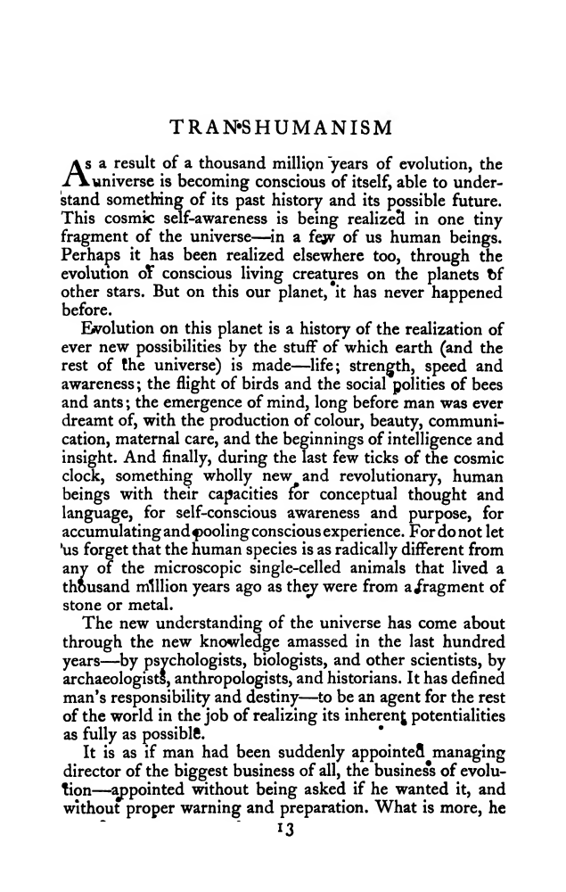
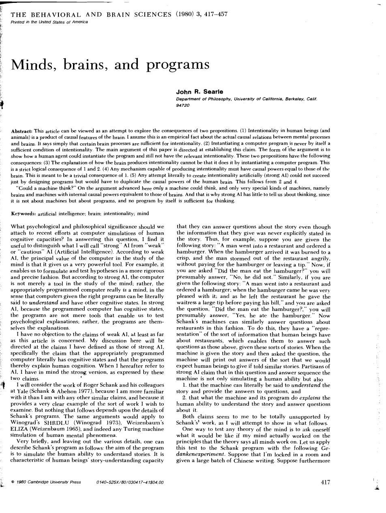
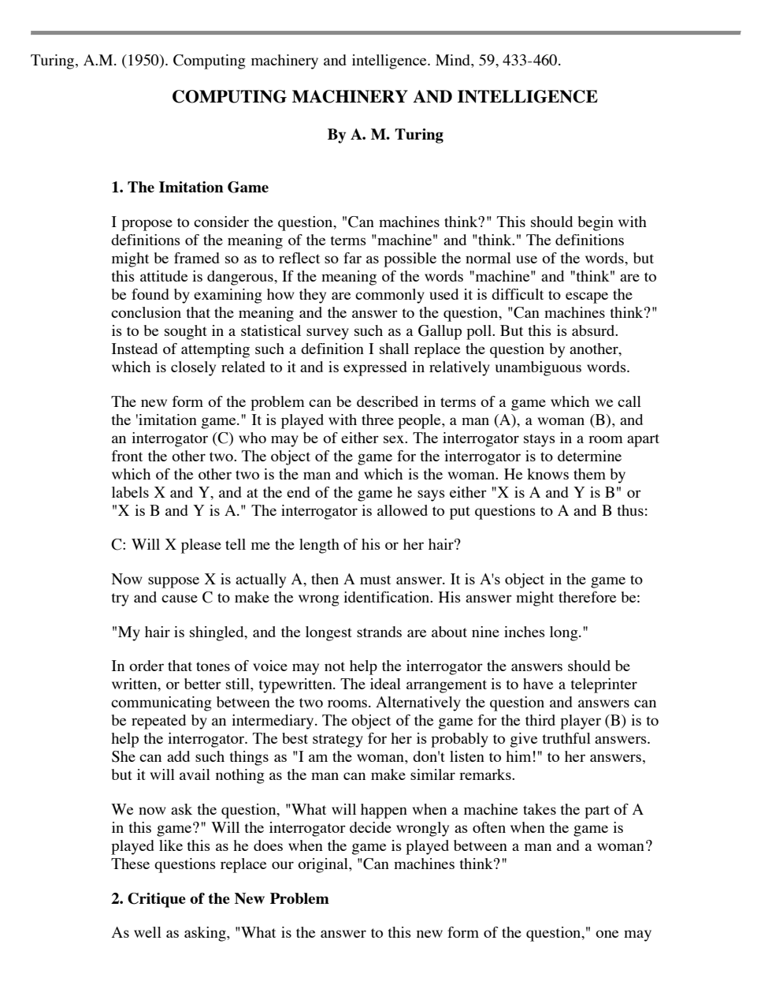
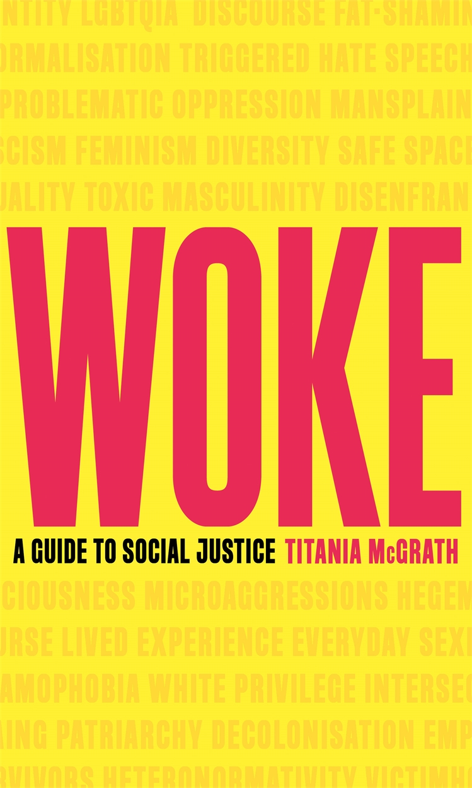
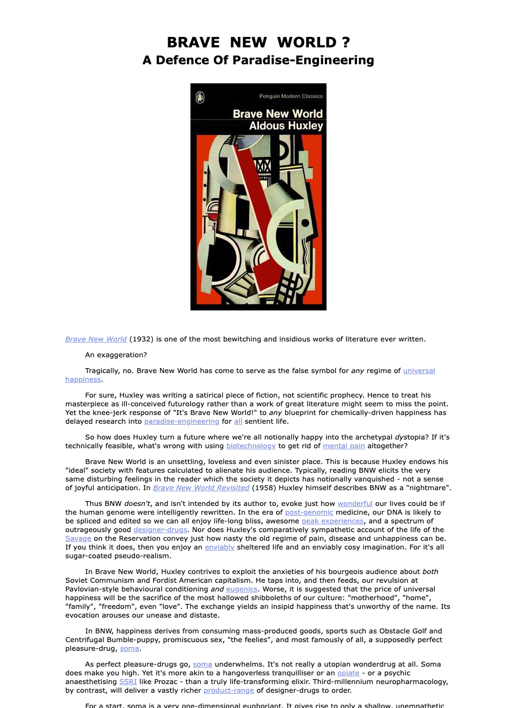

1:06:27 · 14 OPERE
Il transumanesimo.
Il filo del discorso
Dr Divago affronta il transumanesimo partendo da una domanda sull’autonomia: chi stabilisce che cosa significhi migliorare l’essere umano e quanto spazio rimane per comprendere, scegliere o rifiutare una trasformazione tecnologica? La risposta prende forma attraverso la lettura commentata di una voce Britannica. Il relatore contesta il linguaggio promozionale, le promesse di potenziamento e il ricorso al prestigio di accademici e imprese.
Leggi la sintesi completaRiduci la sintesi
Il richiamo di Kant al coraggio di pensare introduce una distinzione importante nel suo ragionamento: opporsi a una narrazione non basta se ci si limita a ripeterne il contrario. La storia del termine conduce al saggio Transhumanism di Julian Huxley del 1957. Dr Divago oppone lo sviluppo attivo della persona mediante educazione e cultura a una trasformazione mediante dispositivi che potrebbe essere subita. La distinzione organizza tutto il video, ma rimane una sua interpretazione: non certifica che la storia del movimento sia una successione semplice, né che ogni intervento tecnico comporti necessariamente coercizione. La genealogia degli Huxley e la critica dell’uso delle parole si accompagnano a Klemperer, Chaplin e Aristofane, esempi rispettivamente di analisi del linguaggio e di satira del potere. La parte centrale interroga emozioni, intelligenza, coscienza e continuità dell’identità personale. Una macchina che produce una poesia la comprende? Un trasferimento della mente conserverebbe la stessa persona? Il richiamo alla stanza cinese e al test di Turing riapre questioni filosofiche, mentre Star Trek offre un esperimento immaginario sul teletrasporto. Le note separano tali interrogativi dai risultati della fisica: il limite quantistico alla copia perfetta di uno stato sconosciuto non dimostra, da solo, l’impossibilità di ogni forma di emulazione cerebrale. La discussione sull’entropia richiede analogamente di distinguere il mantenimento locale dell’ordine nei viventi dal bilancio con l’ambiente. Nell’ultima parte, il problema del progresso diventa politico. Il relatore teme che ricchezza, ricerca e istituzioni convergano nel controllare persone e sentimenti. Woke, di Titania McGrath, introduce una digressione satirica; una frase di David Pearce sulla modificazione genetica delle emozioni riporta alla questione iniziale del consenso. Le invettive psichiatriche e le accuse generali restano attribuite al relatore. La chiusura con Fatherland collega finzione e narrazione pubblica, senza trasformare l’analogia letteraria in prova che le conoscenze sulla pandemia siano un’invenzione. Il nucleo della scheda è il rapporto fra possibilità tecniche, criteri di valore e responsabilità delle scelte.
I libri nel discorso

Risposta alla domanda: che cos’è l’Illuminismo?
Note sul riferimento
Copertina della raccolta che comprende il saggio sull’Illuminismo: Firenze University Press · Sette scritti politici liberi · 2011 · a cura di Maria Chiara Pievatolo
Copertina del volume cartaceo FUP che comprende il saggio, riscontrato dal catalogo universitario. L’ISBN appartiene alla raccolta; il filmato non annuncia un’edizione e il titolo del saggio è un’identificazione probabile della citazione.
Sono nominati Kant, la domanda che cos’è l’Illuminismo e il motto sul coraggio di servirsi del proprio intelletto: corrispondenza univoca con il saggio.

LTI. La lingua del Terzo Reich. Taccuino di un filologo
Note sul riferimento
Copertina: Giuntina, Schulim Vogelmann 72, 355 pagine, ISBN 9788880570721. La pagina editoriale indica anno 1999 e tre riedizioni; altri cataloghi datano esemplari 1998 o 2008, senza che questo identifichi la copia del filmato. A cura di Elke Fröhlich, traduzione di Paola Buscaglione, prefazione di Michele Ranchetti. Originale tedesco LTI. Notizbuch eines Philologen, 1947.
Immagine autentica dell’opera, controllata visivamente; l’edizione di riferimento non è attribuita al filmato.
Klemperer e la lingua del Terzo Reich sono esplicitamente richiamati. Il riferimento è a LTI, non ai Diari.

Il grande dittatore (The Great Dictator)
Note sul riferimento
Grafica dell’edizione video Criterion: Film statunitense del 1940, United Artists, regia e sceneggiatura di Charles Chaplin, 125 minuti. Immagine della grafica Criterion, numero 565, disegnata da Olly Moss; non copertina libraria o locandina originale.
Grafica autentica della edizione video, con le due identità rappresentate in orientamenti opposti. La voce riguarda un film.
Il grande dittatore di Charlie Chaplin è nominato come esempio di satira dei tiranni.

Le nuvole
Note sul riferimento
Copertina: BUR, Classici greci e latini, 2001, a cura di Alessandro Grilli, testo greco a fronte, ISBN 9788817173360. Il catalogo editoriale corrente indica 272 pagine; non si attribuisce automaticamente la stessa paginazione a ogni ristampa.
Copertina autentica Rizzoli / BUR: Aristofane, Le nuvole, cura di Alessandro Grilli, testo greco a fronte e figure tratte da iconografia vascolare. Edizione di riferimento, non certificata nel filmato. La prima rappresentazione è del 423 a.C.; il testo conservato comprende una successiva rielaborazione.
Le nuvole di Aristofane è nominata nel racconto della rappresentazione satirica di Socrate. Il dettaglio sull’applauso di Socrate non è certificato.

Transhumanism (saggio in New Bottles for New Wine)
Note sul riferimento
Inizio del saggio Transhumanism, pagina13,1957: Chatto & Windus · New Bottles for New Wine · 1957 · pagina13
Pagina iniziale del saggio nella raccolta originale. Non copertina del volume né edizione autonoma di Transhumanism. Il video indica anno e saggio, ma non accerta l’esemplare da cui il relatore abbia appreso il contenuto.
Il relatore nomina Julian Huxley e il saggio 1957 omonimo del transumanesimo. Confermati saggio e pagine13–17 nella raccolta originale.

Il mondo nuovo
Note sul riferimento
Copertina della raccolta: Mondadori · Oscar Moderni · 2016
L’immagine mostra il volume Mondadori che riunisce Il mondo nuovo e Ritorno al mondo nuovo. Il collegamento nel video riguarda il primo romanzo, per allusione al titolo inglese; non identifica un’edizione usata dal relatore.
Aldous Huxley, fratello di Julian, è identificato esplicitamente come autore di Brave New World.

Così parlò Zarathustra
Identificazione probabile
Note sul riferimento
Copertina: Adelphi · Piccola Biblioteca Adelphi · riferimento
Immagine associata all’ISBN di riferimento e controllata visivamente; edizione e traduzione non identificate come quelle citate o lette nel video.
Il superuomo di Nietzsche è richiamato come precedente ideologico: probabile allusione a Così parlò Zarathustra. Non pronunciato il titolo e non equiparata automaticamente la nozione filosofica all’eugenetica.

Minds, Brains, and Programs
Identificazione probabile
Note sul riferimento
Pagina417 del saggio di Searle 1980: Behavioral and Brain Sciences · 3(3) · 1980 · articolo417–424
Pagina417 autentica del testo originale. Il PDF ospita anche commenti e risposta: la menzione riguarda il saggio, senza attribuire a Searle tutti i contributi del fascicolo.
La cosiddetta scatola cinese è evocata immediatamente dopo il problema se una macchina possa capire o sentire una poesia. Probabile stanza cinese di Searle, titolo e autore non pronunciati.

Computing Machinery and Intelligence
Identificazione probabile
Note sul riferimento
Inizio del saggio Turing 1950, riproduzione CHM: Mind · 59(236) · 1950 · 433–460 · riproduzione conservata dal CHM
Pagina iniziale della riproduzione tipografica conservata dal museo. Non è la copertina della rivista né una scansione della sua impaginazione originale. Nessuna ristampa particolare è attribuita al filmato.
Il test di Turing è menzionato esplicitamente nel dibattito sulle macchine; il testo di riferimento probabilmente è Computing Machinery and Intelligence 1950. Titolo non pronunciato.
Ghostbusters – Acchiappafantasmi (1984)
Note sul riferimento
Locandina ufficiale Ghostbusters 1984: Columbia Pictures · 1984 · key art ufficiale Sony
Locandina promozionale autentica del film originale nella pagina del distributore. È un riferimento cinematografico, non la copertina di un libro o la documentazione di un fenomeno reale.
Ghostbusters e il fantasma della biblioteca di New York vengono nominati nel confronto fra immaginazione e realtà. Identificato il film originale 1984.

Star Trek: The Original Series
Note sul riferimento
Immagine ufficiale della serie · Kirk e Spock: Immagine promozionale ufficiale di Star Trek.com: Kirk e Spock davanti al Guardian of Forever. È un fotogramma usato dalla pagina della serie, non una copertina libraria, una locandina d’epoca o l’episodio a cui attribuire l’esperimento inventato dal relatore.
Immagine autentica dell’opera, controllata visivamente; l’edizione di riferimento non è attribuita al filmato.
Star Trek è nominata per il paradosso dell’identità personale nel teletrasporto. Non è stato identificato un episodio specifico.

Woke. A Guide to Social Justice
Note sul riferimento
Copertina originale Woke, Titania McGrath: Constable/Hachette · 2019 · copertina condivisa del titolo
Copertina autentica fornita dall’editore, associata anche alla scheda ebook ISBN9781472130839. Il formato e ISBN dell’esemplare mostrato nel filmato non sono accertati. Pseudonimo e natura parodica dichiarati.
Il libro Woke, il sottotitolo guida alla giustizia sociale e il personaggio Titania McGrath sono esplicitamente presentati come satira di un comico inglese.

Brave New World? A Defence of Paradise-Engineering
Identificazione probabile
Note sul riferimento
Inizio del saggio online di David Pearce: BLTC Research · prima pubblicazione 1998 · pagina aggiornata 2026
Schermata autentica dell’inizio del saggio sul sito dell’autore. La pagina contiene l’immagine del romanzo di Aldous Huxley che discute; non viene presentata come copertina del saggio Pearce. La versione web attuale segnala aggiornamenti 2026 e non viene spacciata per copia immutata 1998.
La frase attribuita a David Pearce 1998 sulla riscrittura del genoma e l’innamoramento corrisponde al saggio sul suo sito. Titolo non pronunciato e fonte mediata da Britannica: identificazione probabile.

Fatherland
Note sul riferimento
Copertina: Arrow, edizione tascabile indicata dall’editore al 1 dicembre 2022, 512 pagine, ISBN 9780099527893. Veste grafica editoriale di riferimento, non attribuita al video.
Copertina autentica Penguin / Arrow: autore Robert Harris, titolo rosso Fatherland, architettura monumentale e insegne del regime nella Berlino immaginaria del romanzo. File verificato e visto integralmente. Il contesto alternativo è narrativo e non modifica la documentazione storica della Shoah.
Robert Harris e Fatherland sono esplicitamente nominati come esempio di ucronia in cui il nazismo ha vinto la guerra.